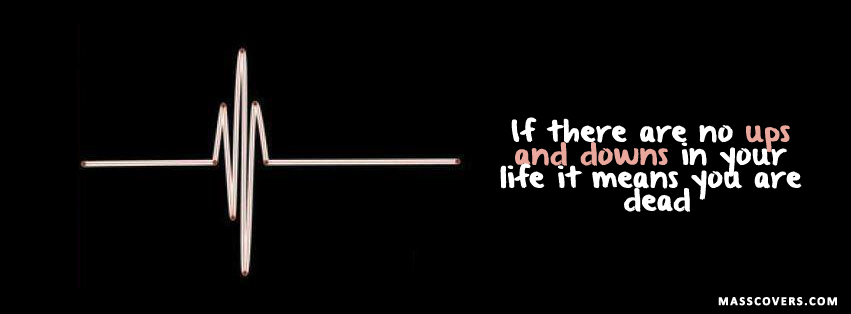

About Me
Hi! I am Sayyid Sofwan, a Computer Engineering major at U of M. I am takings English 125 in Winter 2014. I was born and grew up in Malaysia, a green, hot and humid country where it is always summer (see above pic). I love computers and programming (duh, just look at the major!). I enjoy reading (mostly novels and science magazines) and writing (a bit). My writing is mostly about myself, Malaysia and Computers.
Reflections
The last four month seems like a blink of an eye. It feels like a moment ago when I first entered a cramped class of around 15 people, after a horrible snowstorm (thank goodness we changed the class, and thank goodness it’s nice and warm now), feeling nervous and inferior, taking my first English class at the States (oh no, I’m taking an English class with Americans. They are native speakers, I’m not. How can I do well?). A lot have gone by since then. I have read over 400 pages of articles (I managed to finish that THICK BOOK! :D), wrote more than 40 discussion questions, and wrote three 8 paged essays (I’m feeling quite proud of myself). From this experience, there is a lot I learn and a lot I can reflect on.
Past writing experience
Looking back when I first learned writing (in primary and secondary school), I really didn’t like writing that much (although I do enjoy reading, and I always wished my writing was better)—most probably because I felt that writing classes were boring, and I don’t really see any use for it. Writing classes in secondary school consist of learning how to structure an essay (introduction, contents, conclusion)—which I felt was really boring and repetitive (not to mention not at all creative). I think the worse part of the classes were the exams, where we were expected to write about some boring topic, and only given an hour to do so. Fortunately, I was one of a few Malaysian students who love reading English, and I manage to do pretty well in English writing classes in Malaysia (not Malay writing classes though).
I think my worse experience with writing exams was the SAT exam. My experience reading didn’t help me much here—a lot of people taking the exam were already native speakers. Whatever I do, I can never write a good essay in 30 minutes given some weird philosophical question. Worse, most SAT practice books give examples of perfect essays that I know I can never write. I think taking the SAT exam really demotivated me on trying to learn writing, and I felt that my writing must be really bad compared to native English speakers.
I think one of the first essay I really enjoyed writing was my college admission essay. I enjoyed it because although it was only 500 words long, I worked a long time on it (compared to half an hour given in exams), and I iteratively improved it, and I am really satisfied with it. The essay is in the narrative genre (more like a memoir), and I think writing it made me think a lot about myself and the lessons I learnt from life. An important thing I learnt about writing in this genre is that instead of just telling the reader something, you must show it to them.
This is a snippet of my first draft, where I only told the reader something:
Leadership is another skill that was honed in MATRI. Unlike other schools, students’ affairs in enforcement of rules and the organization of programs in MATRI are implemented and organized by students.
And this is how I improved it on the final draft:
“Let’s think of a group name and motto. You have any suggestions?” I asked, looking intently at the young first formers’ faces around me. Their faces portrayed a myriad of emotions, from eager and happy to sad and lonesome.
It was the start of a new term, and as usual, first formers will have to go through orientation week. I volunteered as a facilitator to help them adapt to the boarding school. While looking at them, I reminisced how I was when I entered this school.
You can see that the final draft feels a lot more real and interesting. Other than this, there are a lot that I managed to improve from my first to my final draft—I managed to decrease the number of words from 1000 to 500, and still made it more meaningful. You can read my first draft here and my final draft here. From this, I understand that when you write something, the writing is not set in stone—you can still change it, and make it better.
Then, I started taking college writing courses. In these courses (only 2 actually, one is in my preparation college in Malaysia, and one is this course), I was given more time to think about my writing, and to iteratively improve it, and to get feedback from other people (The best part is there are no exams!!). It was a lot different from my high school writing classes and the SAT essays, and I think I got out a lot more from these classes.
English 125 at U of M
Fast forward a year, and here I am at U of M (not taking English 125 yet).
I was hoping that I would not have to take any English class here (after my horrible experience with SAT exams, and I am majoring in Engineering!!). I was really dismayed when the CoE (College of Engineering) website listed English as a prereq to transfer to CoE. I tried applying without English, but was rejected :( . And so, with a heavy heart (thinking that this would be my worse semester ever, and feeling that I would just have to get this over with), I added English 125 to my list of courses (a year and a half after I came here, after being rejected by CoE).
DSP essay? What DSP essay!?
Fortunately, as a transfer student, I didn’t have to do the DSP essay. However, I did receive an email from Ms. K that I have to do it, and I was quite surprised (and dismayed, I must say--first day of class and I already need to write a 1000 word essay? What!?). I ended up writing an introduction, which I think was not really good, but I was lazy, so whatever (I was relieved when I got the email that I don’t really have to do the essay after all).
What I felt about the class
I think overall I really enjoyed the class. At first, I thought that my English would be really bad, and I wouldn’t be able to say anything in class (you see, when I speak in some classes, people don’t seem to understand me. It’s really frustrating). I also thought it would be really hard to start writing again after almost two years not writing any essays, although according to my TOEFL (test of english for foreign students) exam, my written English is much better than my spoken English. But everything turned out alright. I was able to participate in discussions (weird, people in this class seem to understand me, but people in other classes don’t), and write some essays. The best part is every negative thought I had about the class was wrong (It wasn’t my worse semester at U of M after all :D). I really enjoyed the class--I loved the first few weeks, where we did interesting introduction “icebreaker” activities, I enjoyed most of the discussions (I wonder how we can have such interesting discussions about such boring topics!), and (surprisingly) I feel really good about most of the writing I did.
Ups and downs in writing
For me, writing always have its ups and downs. Sometimes I feel that I have a lot to write about, and I can just start writing, and everything will just fit into place. Othertimes, I feel that I can’t write anything and I would just stare at my laptop screen, typing a sentence and then deleting it again.
So, I think the time I really excelled was when I have something write about (honestly, I feel really excited if I have an idea about something and I want to write about it). This happened mostly in my blog posts and in my second essay. Looking back at my writings, I really enjoyed writing about programming, and writing about something I just understand, and I want other people to understand. For example, in my discourse community essay, I wrote about programming (hackers specifically). I think I really did a great job explaining about the hacker community to outsiders, and this is because I always wanted to explain it to outsiders (and of course I got great feedback from Ms. K and my peers about what is confusing). Here is an explanation about programming language that I feel is really good for outsiders (Thanks to Dan and Ms. K who gave me the idea :P )
A common word in the hacker community that even non-hackers should know about is the word “language.” “Language” in the hacker community often means programming language, the language used by hackers to give instructions to the computer. Because normal languages are too complex, ambiguous, and therefore hard for computers to understand, hackers need to use a programming language, which is clear and easily understood by computers. Similar to normal languages, there are many different programming languages, each with different “words” and “grammar” for giving computers instructions. As an example, to say “and”, we use the symbol “&&” in C++ and Java, and just the word “and” in Python.
I also think I’m good at explaining things I just understand, and I can relate to my life. An example of this is when I read Lippi-Green’s Sound House analogy. After reading it, I understand why I am having such a hard time with my English here, and I want other people to understand too. So I wrote a blog post about my experience (and problems) learning and speaking English using this analogy:
After more than 15 years in Malaysia, I came here to study. I found that I need to visit my English sound house again. I was shocked to find that time, weather, and termites have almost completely destroyed it. I started looking all over the place for the bricks I used to build the sound house, but I can’t find it. In desperation, I took some bricks from my Malay sound house and tried to rebuild my English sound house from that.
(Okay, quit the analogies!) Because of that, the way I speak English is now mixed with my Malay. Spoken Malay is really fast and monotonous. That’s why when I speak English, usually it is monotonous, and sometimes I combine words together, to make it faster. I notice that it is hard to understand my spoken English.
Now, I am still in the process of rebuilding and renovating my English sound house. I look at other people’s sound house, and try to imitate it, using the limited amount of bricks I have (how did they pronounce water - is it “water”, “wa’aer”, “wader” or what??). ;)
I think something I struggled with in writing the first two assignments was integrating external sources. I think my biggest problem was I often postpone thinking about the external source until after I finish writing my first draft. For the first assignment, although my idea was based from Lippi-Green’s writing (and I thought I can easily integrate her idea afterwards), it was really hard when I tried to integrate it. This is mostly because the tone of my narrative is different from her academic tone. I ended up just integrating it in one paragraph, which sounded a bit awkward:
Now I have been at INTEC for a few months, and I had made friends with a lot of southerners, none of them fitting my southerner stereotype. I now understand that it is not right to judge or discriminate against someone just because of their accent. In her book, English with an Accent: Language, Ideology, and Discrimination in the United States, Lippi-Green describes the seriousness of this problem in her story of Mr. Kahakua, who was denied a promotion that requires him to read prepared weather reports on the radio, just because of his Hawaiian accent (44). Mr. Kahakua then lost in trial because the judge, who was not a native Hawaii, believed that radio announcers should speak “Standard English” (44). Reflecting this story on myself, as a southerner who speaks “Standard Malay”, it is not right for me to believe that the northern accent is lower and “less standard” than my accent. Similarly, as someone who uses the northern accent, it is not right for me to say that southerners need to learn how to pronounce “As” correctly. We must understand that “variation is intrinsic to all spoken languages”, and we must learn to accept it (Lippi-Green 25).
For my second essay, I integrated Swales definitions pretty well, but I did not take into account that I had to use another external source. I found a really good external source for my topic but it is hard to use it because I already have my first draft, and it is hard to modify it. I think if I had found the source earlier, and read it first before writing my first draft, it will be easier to integrate it. In the end, I just used some facts from this draft to strengthen my argument:
The hacker community may not be well known, and may not seem important to people outside of it. Outsiders observing the community may argue that the “hacks” by hackers are insignificant compared to the products launched by large companies with hundreds of developers and millions of users. However, most great products that changed the world actually starts with a hacker trying to solve a problem. For example, Apple II, Apple’s first computer, was Steve Wozniak’s hack - he actually made the computer, which is one of the first commercial PCs, in his garage (Levy 259-267). His ambition was to make computers, which are uncommon at that time, available to everyone. At first, people doubted that Apple II can compete with computers manufactured by large companies like HP or IBM, and called Steve Jobs and Steve Wozniak “two guys in a garage” (Levy 269). But Apple II became the product that launched the PC industry, with more than six million units sold (Isaacson 84). Besides that, Google’s search engine was Larry Page and Sergey Brin’s hack - they created Google because they wanted a search engine that actually knows what people want. It is hackers, and their love for seeking problems and solving them, that made computers what they are today.
I think a major problem I have (and I really need to improve on) is my essay organization (which Ms. K always points out). For my first essay, I used flashbacks a lot, and it is hard to distinguish between timeframes:
...At my school, there was a group of southern students who always stick with themselves, refused to mix with northerners, and caused a lot of problems. They loved mocking me and making fun of me. In fact, the only southern accent I hear at school was from them jeering at me. From this experience, I started to hate southerners, especially those my age, and I felt that most of them are arrogant people that looked down on northerners.
It was because of my new northern accent, and my new mentality towards southerners, that I came to INTEC feeling gloomy and uncomfortable. The thought that the southerners would judge and look down on me because of my northern accent, made me try hard to hide my accent and mimic the southern accent.
“Wei, Sayyid, kau dapat kelas ape? Aku kelas Chicago dowh!” Mirza asked me. “Hey, Sayyid, what class are you in? I’m in the Chicago class!” It was a week after I entered INTEC, and students were being divided into smaller classes that they will be with for the rest of the semester. The classes, weirdly enough, were named after cities in the States. ...
In this example, there is a jump between time (the first paragraph was five years ago). It is hard for readers to notice this. I think I can improve it by adding some markers (a timestamp maybe, or an introductory sentence).
In my second essay, I had problems with transitions (I kept on using on the other hand, etc--this was how they thought me back in Malaysia :P ). I think I need to find a way to improve it:
On the other hand, a discourse community, according to John Swales, is defined by six characteristics, which are an “agreed set of common public goals”, “mechanisms of intercommunication among members”, “participatory mechanisms”, “one or more genre in its [communication]”, “specific lexis”, and “a threshold number of members” (Swales 471-473).
I think the essay I had most problem on was the final (report) essay. However, I didn’t have any problem integrating my sources in this essay (because I thought about the sources earlier on)--I had the problem of having too many sources, and I found it difficult to choose which of the source supports my argument. Also, if you haven’t notice, I really don’t like formal essays much. I was writing about--sort of--who should take Computer Engineering, but most of my sources is about research and writing in Computer Engineering. At first I thought I can integrate it, but it was really difficult, and I don’t know if I did it well enough or not. For example, here is one of my findings:
From these observations, I can conclude that Computer Engineering researchers tend to value data and objectivity rather than personal opinion. By minimizing the use of stance, researchers in Computer Engineering minimizes their role in the paper and allows the conclusions of their paper to be tied more closely to the results rather than their personal opinions (Hyland, 2011). The minimal usage of engagement, on the other hand, allow readers to concentrate more on the results of the research. Computer Engineering researchers often view engagement features such as questions as a distraction because it makes it harder for readers to find the results (Hyland, 2011).
It find it hard to actually connect this finding to whether or not people should major in CE. I think one way to overcome this problem is to have a clear goal about what I’m writing about when I was doing my research, so that I can ask more relevant questions, and use more relevant sources.
How have I improved?
Honestly, this is a really hard question for me to answer (that’s why I’m answering it last :P --although I put it in the middle :) ). One of the easiest improvement (quantitatively) I can see is my essay marks :D . Qualitatively, I think where I improved on the most was integrating external sources. I really had a problem with it in the first essay, and this improved over the next two essays (I think I did pretty well with integrating sources in the final essay). Another aspect where I improved on was organization. My first essay’s organization was really confusing, with all those flashbacks (but I still like the flashback technique a lot--I think it makes people want to know what actually happened). My second essay was littered by “on the other hand”s, but I think this was better than flashbacks that’s hard to understand. My final essay was a report, so I can have titles in each section which I think was really good for organization.
What I get out of English 125
To me, the most important thing I learned in this class is to appreciate language and literacy. Honestly, before taking this class, I feel that language and literacy were petty things that are not worth knowing (compare to the cool stuff engineers do). In the class, after reading articles, discussing, and writing, I understand how huge an impact language and literacy (this includes genres, discourse communities, academic writing, and a dozen of other things we learned), has on my life. I realize that before this, I used to take language and literacy for granted; I never really think about it, much less appreciate it. Learning and reading about language and literacy opened my eyes to a part of knowledge I never knew existed, and writing about it helped me understand myself better.
Another valuable lesson I learned was about writing in multiple genres. This class taught me a lot on writings in different genres (which I was only subconsciously aware of before this), and the different conventions used in each genre. I think this is the first time I write while really thinking about whether or not what I am writing is appropriate for the genre, and whether or not my readers would understand it. I feel that this experience will prove invaluable in my future writings.
Writing and the future
Honestly, for now, I have not taken any classes that requires a lot of writing here, so I never had the opportunity to use skills developed in this class in other courses, nor use any skills I acquired from other courses in this class. Most of my writing experience before taking this class was from my writing classes in Malaysia. I am, however, planning to take a humanities course next semester, and I think my experience writing in this class, especially the report writing, and the citations, and integrating external readings into my own writing will be useful.
One of the things I get out of this class was that writing is everywhere, and in lots of different genres--it is not just limited to academic writings to impress an English teacher. One of the writing I often do today (at work) is commenting and documenting code, which is not easy and is really important (refer Anna’s essay :) ). I think my experience writing a lot of different genres in this class will help me in doing this. Besides that, I think a valuable experience I have from this class is writing the reports genre. I believe I will use this genre a lot in the future, in both the academic field and in a job.
One of the goals I have as a writer is I want to continue to write blogs and reflections (because I really enjoy writing these genres!). But some of the challenges I have is as a human (I was thinking as an Engineer, but everyone’s busy too), I am always busy :P (Is that just an excuse?). I do hope (I will!) to continue writing in the future.
Happy writing!
Sayyid.
Downloads
Here are some downloads of my works over the semester (for me or anyone interested to look through).